6. MSKのチュートリアル実装(CLI編)¶
MSKを利用したメッセージの送受信を行うために、MSKのクラスターを作成する。 その後、クラスターに対してキュートなるトピックを作成する。 最後に、EC2上からCLIを利用して、メッセージの送受信を行う。
6.1. クラスターの作り方¶
基本的にMSKはマネージドなkafkaのクラスターを提供するサービスである。 そのため、kafkaのトピック作成やメッセージの送受信、メッセージの中身の確認といった部分のサポートは提供されていない。
MSKのコンソールからクラスターを作成を選択。カスタムを選択する
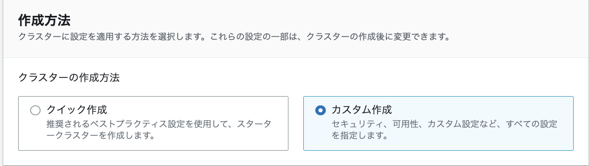
クラスター名を設定する。
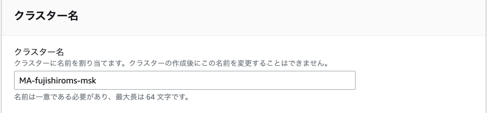
クラスターのタイプはプロビジョンドを利用
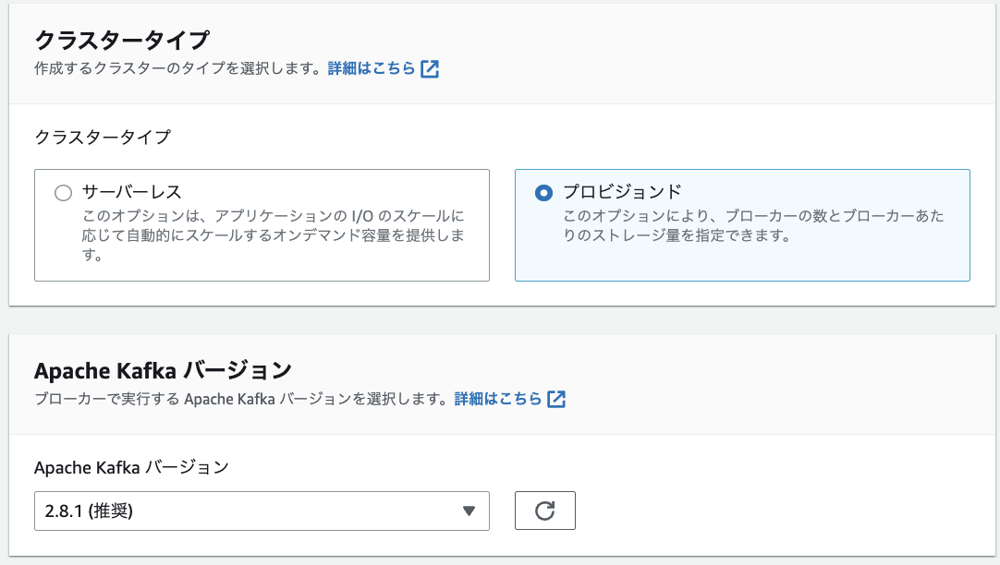
ブローカーのインスタンスのファミリーのタイプを選択を行う。 (図では大きいファミリーだが小さいのでOK) ブローカーがどの程度分散されるかなどを設定できるか、AZに分散をするので、この後に設定するネットワークの設定と関連する。
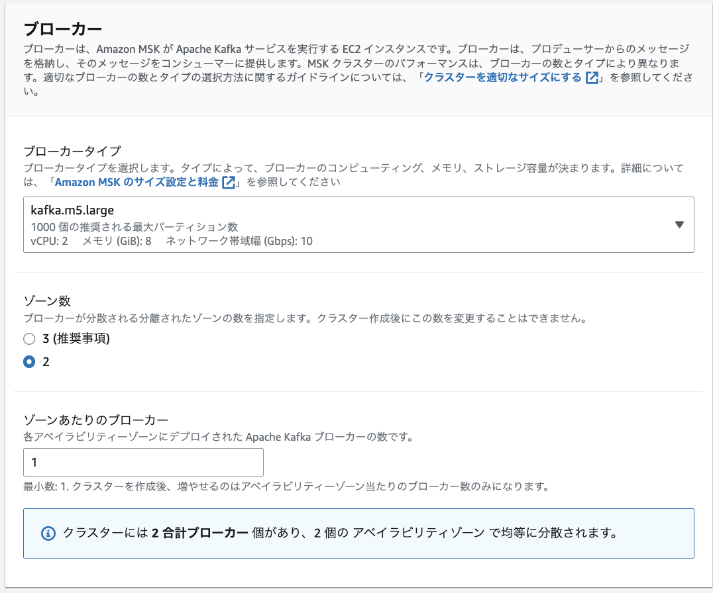
ネットワークの設定を行う。
事前に設定するVPC、AZ、セキュリティグループを作成しておく。
後ほど、EC2のクライアントと接続できるようにセキュリティグループの設定を行う。
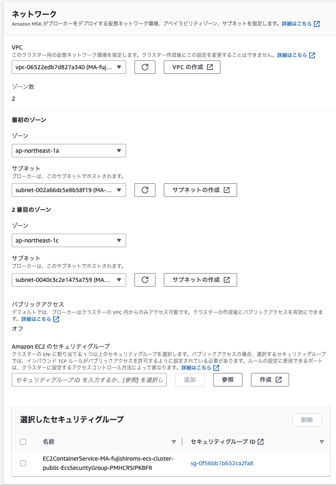
セキュリティの設定を行う。一旦はIAMベースでのセキュリティやメッセージの暗号化について設定しておく
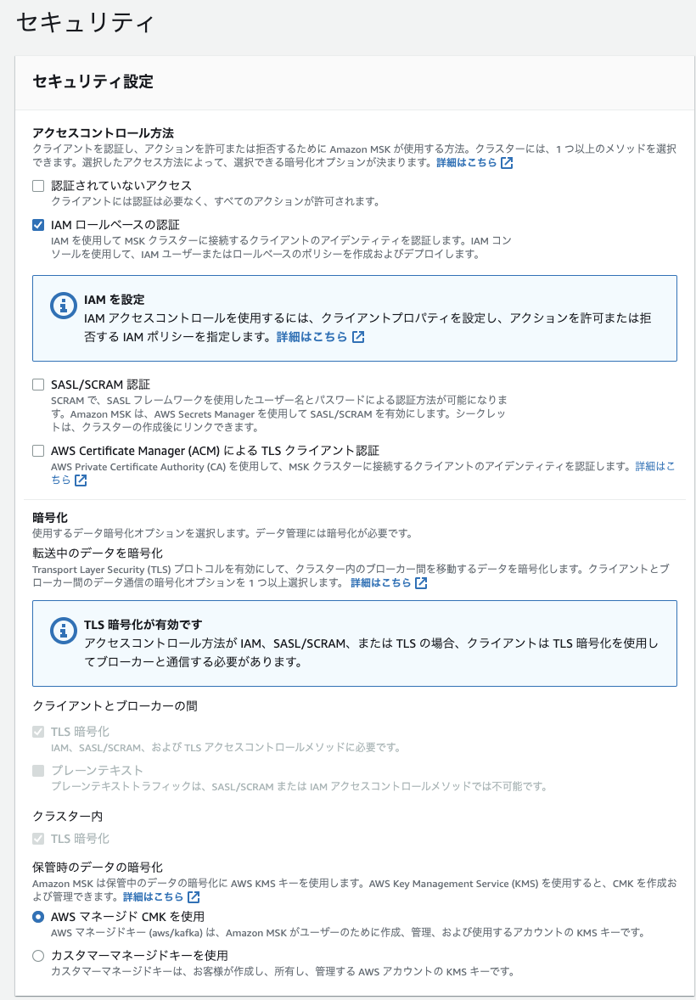
モニタリングの設定をする前にロググループを設定しておく 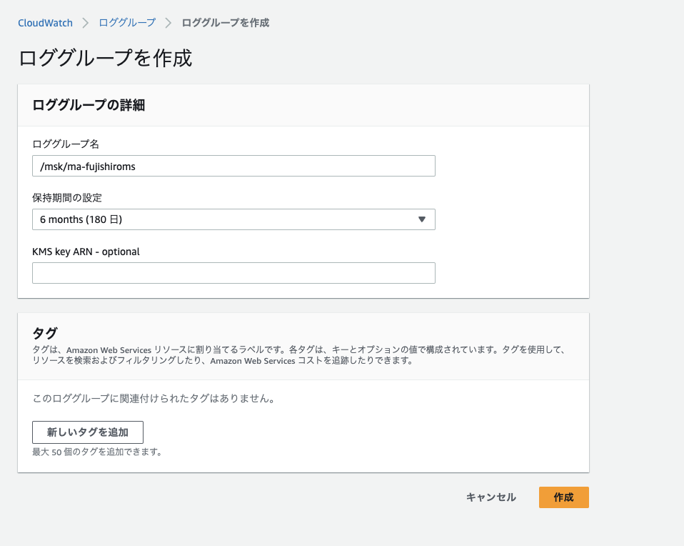
作成したロググループを使って、ログの出力を行う。ログのレベルはDEFAULTでOK
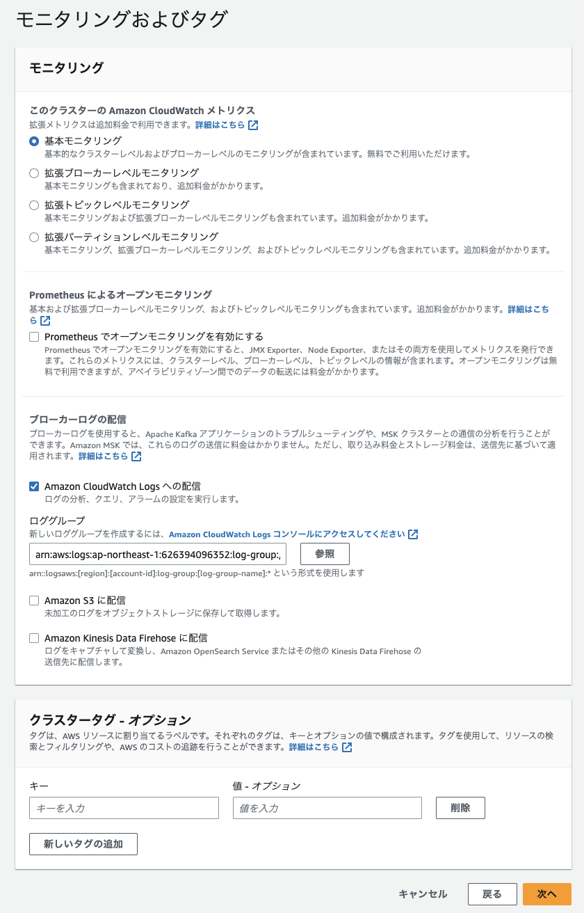
作成後に変更できる項目などの一覧は以下 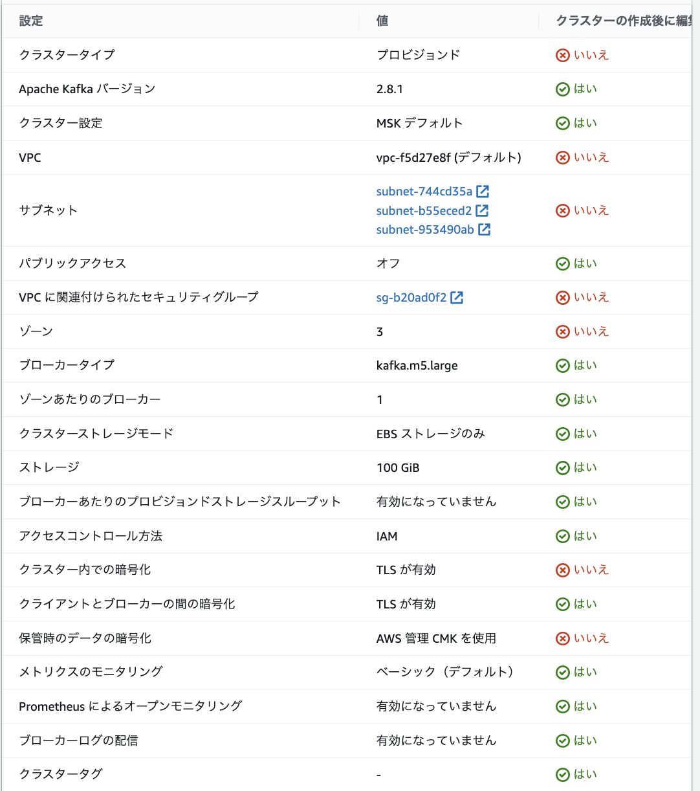
6.2. EC2の作成¶
6.2.1. IAM Roleの作成¶
EC2に付与するMSKにアクセスすることができるポリシー及びロールを作成する
ポリシーを作成して、以下のポリシーに対して3点変更する
Account-ID
MSKTutorialCluster
region
{
"Version": "2012-10-17",
"Statement": [
{
"Effect": "Allow",
"Action": [
"kafka-cluster:Connect",
"kafka-cluster:AlterCluster",
"kafka-cluster:DescribeCluster"
],
"Resource": [
"arn:aws:kafka:region:Account-ID:cluster/MSKTutorialCluster/*"
]
},
{
"Effect": "Allow",
"Action": [
"kafka-cluster:*Topic*",
"kafka-cluster:WriteData",
"kafka-cluster:ReadData"
],
"Resource": [
"arn:aws:kafka:region:Account-ID:topic/MSKTutorialCluster/*"
]
},
{
"Effect": "Allow",
"Action": [
"kafka-cluster:AlterGroup",
"kafka-cluster:DescribeGroup"
],
"Resource": [
"arn:aws:kafka:region:Account-ID:group/MSKTutorialCluster/*"
]
}
]
}
ロールを作成して、一般的なユースケースで EC2を選択した上で、先ほどのロールに対しても追加する。
6.2.2. EC2インスタンスの作成¶
MSKのクライアントをEC2で作成する。 簡単のためにMSKと同じVPC上にEC2を作成する。
名前とインスタンスの設定はデフォルト
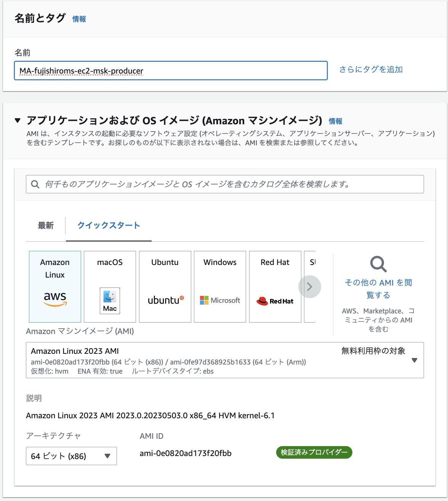
ネットワークの設定はMSKと同じVPC内にEC2を作成する
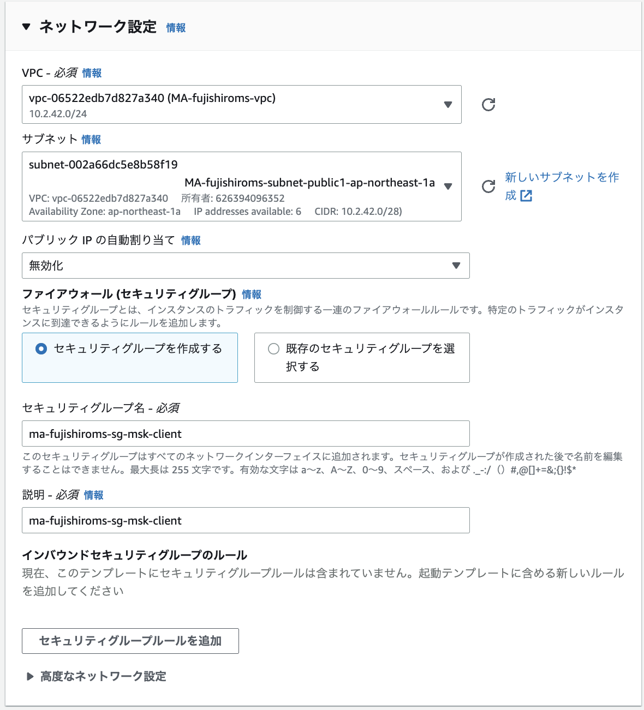
作成が完了したら、セキュリティグループのルールの変更とIAMロールの付与を行う。
まず、セキュリティグループを修正するためVPCのコンソール画面からセキュリティグループの画面に移動する。
MSK側のSG
インバウンドルールを編集してEC2のSGからのすべてのトラフィックについて許可する。EC2側のSG
SSHの許可をする。ポート22に対して0.0.0.0/0で許可する。
次に、IAMロールを付与するためにEC2のコンソールからIAM Roleの付与を思う。
6.3. トピックの作り方¶
EC2からインスタンスを選択して、接続する。
javaのインストール
sudo yum -y install java-11
kafkaのダウンロードと解凍
wget https://archive.apache.org/dist/kafka/2.8.1/kafka_2.12-2.8.1.tgz
tar -xzf kafka_2.12-2.8.1.tgz
kafka_2.12-2.8.1/libsディレクトリに移動し、次のコマンドを実行して Amazon MSK IAM JAR ファイルをダウンロードします。Amazon MSK IAM JAR により、クライアントマシンはクラスターにアクセスできます。
wget https://github.com/aws/aws-msk-iam-auth/releases/download/v1.1.1/aws-msk-iam-auth-1.1.1-all.jar
kafka_2.12-2.8.1/bin ディレクトリに移動します。次のプロパティ設定をコピーして、新しいファイルに貼り付けます。ファイルに client.properties という名前を付け、保存します。
security.protocol=SASL_SSL
sasl.mechanism=AWS_MSK_IAM
sasl.jaas.config=software.amazon.msk.auth.iam.IAMLoginModule required;
sasl.client.callback.handler.class=software.amazon.msk.auth.iam.IAMClientCallbackHandler
以下を実行するとTopicが作成される
bin/kafka-topics.sh --create --bootstrap-server BootstrapServerString --command-config bin/client.properties --replication-factor 2 --partitions 1 --topic MSKTutorialTopic
6.4. メッセージの送信¶
<path-to-your-kafka-installation>/bin/kafka-console-producer.sh --broker-list BootstrapServerString --producer.config bin/client.properties --topic MSKTutorialTopic
コンソールが出力されるのでメッセージを記入

6.5. メッセージの受信¶
別のEC2を起動し、javaやkafkaのインストールをする。
以下のコマンドを実行すると、producerで送信されたメッセージが受信できる。
<path-to-your-kafka-installation>/bin/kafka-console-consumer.sh --bootstrap-server BootstrapServerString --consumer.config bin/client.properties --topic MSKTutorialTopic --from-beginning
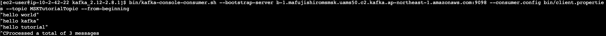